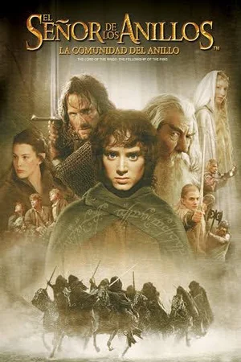
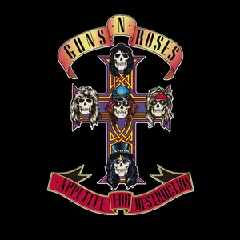
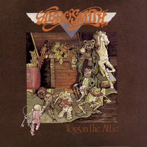
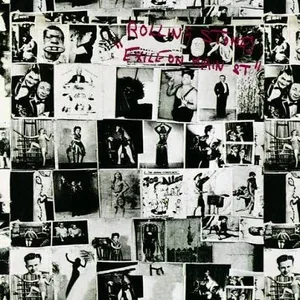

Perfil 4 · Grupo 12
Javier Churquina
Data & Routing
Perfil orientado a construir soluciones confiables para logística inteligente, con foco en Data & Routing.
Interacción de rol:
Stack
Habilidades
Herramientas seleccionadas para representar el aporte de este perfil al equipo.
Preferencias
Películas favoritas
Selección personal del integrante.

El Señor de los Anillos: La Comunidad del Anillo
2001
Oblivion
2013
La isla
2005
Música
Discos favoritos
Al activar ▶, Spotify se carga bajo demanda dentro del mismo cuadrado.

Appetite for Destruction
Guns N' Roses · 1987

Toys in the Attic
Aerosmith · 1975

Exile on Main St.
The Rolling Stones · 1972
Contacto
Contactá a Javier Churquina
Completá el formulario. La interacción se valida en la página y muestra el resultado sin redirigirte.
Continuá explorando